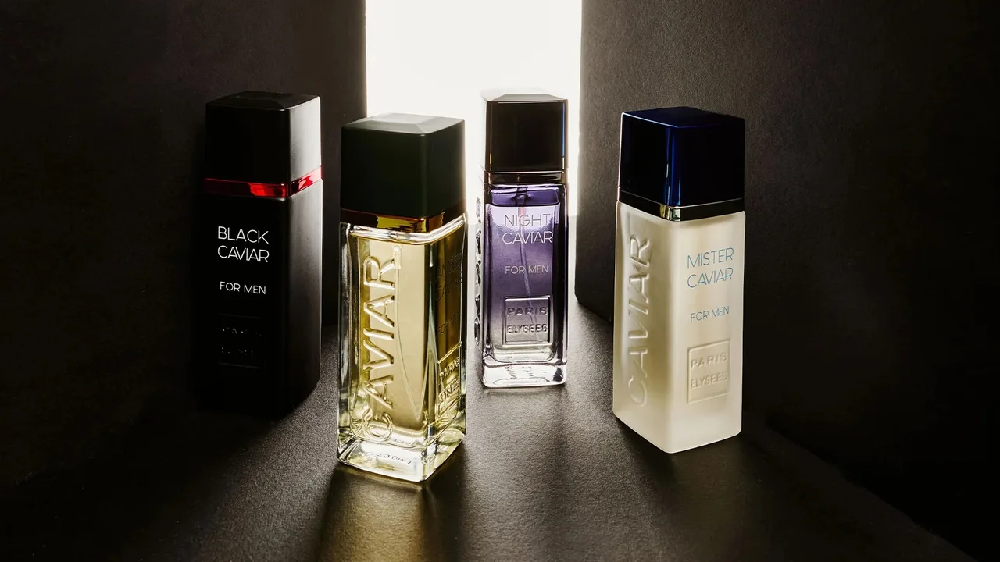

Linha Paris Elysées · 10 perfumes
Caviar Collection
A linha Caviar reúne fragrâncias masculinas e femininas de perfil amadeirado, oriental e floral.

 Amber CaviarMasculino · amadeirado aromático
Amber CaviarMasculino · amadeirado aromático Black CaviarMasculino · amadeirado oriental
Black CaviarMasculino · amadeirado oriental Black Caviar WomanFeminino · floral oriental
Black Caviar WomanFeminino · floral oriental Brown CaviarMasculino · fougère aromático amadeirado
Brown CaviarMasculino · fougère aromático amadeirado Dark CaviarMasculino · oriental especiado
Dark CaviarMasculino · oriental especiado Gold Caviar WomanFeminino · floral amadeirado
Gold Caviar WomanFeminino · floral amadeirado Mister CaviarMasculino · amadeirado aromático
Mister CaviarMasculino · amadeirado aromático Night CaviarMasculino · amadeirado oriental
Night CaviarMasculino · amadeirado oriental Silver CaviarMasculino · amadeirado aromático
Silver CaviarMasculino · amadeirado aromático Style CaviarMasculino · amadeirado aromático
Style CaviarMasculino · amadeirado aromáticoComparativo da Caviar Collection
| Perfume | Gênero | Família olfativa | Conc. |
|---|---|---|---|
| Amber Caviar | Masculino | Amadeirado Aromático | EDT |
| Black Caviar | Masculino | Amadeirado Oriental (âmbar fougère) | EDT |
| Black Caviar Woman | Feminino | Floral Oriental (floral amelado) | EDT |
| Brown Caviar | Masculino | Fougère Aromático Amadeirado (Fougère · Aromatic · Woody) | EDT |
| Dark Caviar | Masculino | Oriental Especiado (âmbar / couro) | EDT |
| Gold Caviar Woman | Feminino | Floral Amadeirado (floral rosado) | EDT |
| Mister Caviar | Masculino | Amadeirado Aromático | EDT |
| Night Caviar | Masculino | Amadeirado Oriental (âmbar aromático) | EDT |
| Silver Caviar | Masculino | Amadeirado Aromático | EDT |
| Style Caviar | Masculino | Amadeirado Aromático | EDT |